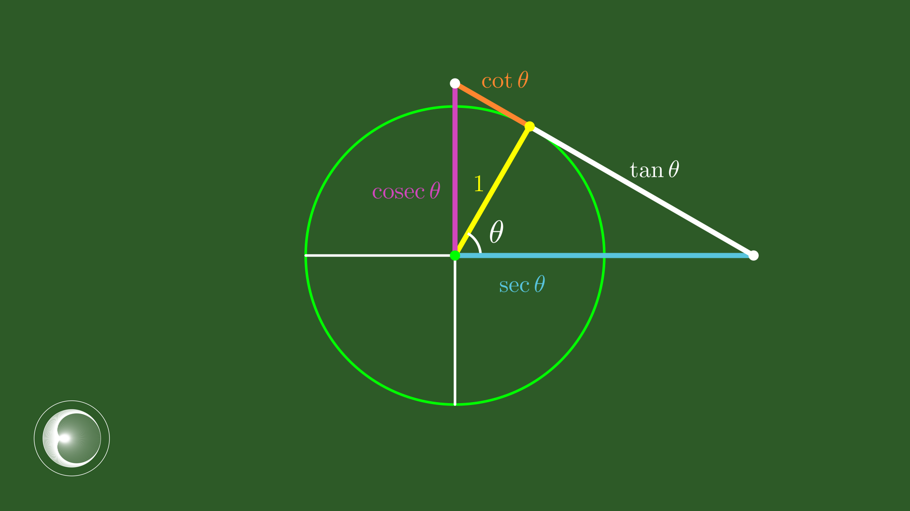

Reciprocal circular functions
We've explored sine, cosine, and tangent functions in some depth. Now it's time to broaden our horizons with some new functions.
Take your time with each video. Pause, rewind, and think before moving on!
 Dr Brian Brooks
Dr Brian Brooks
Mathematics InSight
Reciprocal circular functions
Take a look at this animation.
What are the lengths of the three coloured line segments (in terms of \(\theta\))?
The functions \(\displaystyle{\frac{1}{\cos\theta},\;\frac{1}{\sin\theta},\;\frac{1}{\tan\theta}}\) are useful enough to merit having their own names:
\[\begin{align*} &\frac{1}{\cos\theta}=\sec\theta\\[6pt] &\frac{1}{\sin\theta}=\mathrm{cosec}\,\theta\text{ or }\csc\theta\\[6pt] &\frac{1}{\tan\theta}=\mathrm{cotan}\,\theta\text{ or }\cot\theta \end{align*}\]
What would Pythagoras say about each of the right-angled triangles in this diagram?.
What happens to \(\sec\theta\) as \(\theta\to 90^\circ\) ?
What is the minimum value of \(\sec\theta\) ?
What happens to \(\sec\theta\) as \(\theta\to 0\) ?
\(\sec\theta\to\infty\) as \(\theta\to 90^\circ\)
\(\sec\theta\geq 1\)
\(\sec\theta\to 1\) as \(\theta\to 0\)
What happens to \(\mathrm{cosec}\,\theta\) as \(\theta\to 90^\circ\) ?
What is the minimum value of \(\mathrm{cosec}\,\theta\) ?
What happens to \(\mathrm{cosec}\,\theta\) as \(\theta\to 0\) ?
\(\mathrm{cosec}\,\theta\to 1\) as \(\theta\to 90^\circ\)
\(\mathrm{cosec}\,\theta\geq 1\)
\(\mathrm{cosec}\,\theta\to \infty\) as \(\theta\to 0\)
What happens to \(\cot\theta\) as \(\theta\to 90^\circ\) ?
For what value of \(\theta\) is \(\cot\theta=1\) ?
What happens to \(\cot\theta\) as \(\theta\to 0\) ?
\(\cot\theta\to 0\) as \(\theta\to 90^\circ\)
\(\cot 45^\circ= 1\)
\(\cot\theta\to \infty\) as \(\theta\to 0\)
The same diagram illustrates these three new functions for other values of \(\theta\). Lengths are always positive, however, so they cannot easily show when these functions are negatives.
Since
\[\begin{align*} &\frac{1}{\cos\theta}=\sec\theta\\[6pt] &\frac{1}{\sin\theta}=\mathrm{cosec}\,\theta\text{ or }\csc\theta\\[6pt] &\frac{1}{\tan\theta}=\mathrm{cotan}\,\theta\text{ or }\cot\theta \end{align*}\]it must be the case that \(\sec\theta < 0 \) whenever \(\cos\theta < 0\) and so on.
This animation should help.
On the same set of axes, draw the graphs \(y=\cos x\) and \(y=\sec x\).
On a new set of axes, draw the graphs \(y=\sin x\) and \(y=\mathrm{cosec}\, x\).
On a new set of axes, draw the graphs \(y=\tan x\) and \(y=\cot x\).
Well done!
You've now seen how the graphs of \(y=\sin x\), \(y=\cos x\), and \(y=\tan x\) arise directly from the unit circle. This connection is fundamental to everything that follows.
Dr Brian Brooks
Mathematics InSight